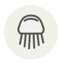

Hydne hérisson
Lion's mane
| Nom latin | Hericium erinaceus |
|---|---|
| Famille | Champignons |
| Origine | Hêtres et chênes sur pied |
| Saison | août – novembre |
| Goût | Délicat · Charnu · Noisette |
| Prix courant | 25–45 €/kg |
Ce que c’est
Au Japon on l'appelle yamabushitake, du nom des pompons qui ornent la robe des yamabushi, les ascètes des montagnes. Il n'a ni chapeau ni lames : toute la cascade blanche d'aiguillons porte les spores, suspendue à la plaie d'un hêtre ou d'un chêne encore debout.
En cuisine
Il est fait d'eau aux neuf dixièmes : effilochez-le, pressez-le fermement dans une poêle sèche jusqu'à ce qu'il cesse de rendre, puis ajoutez le corps gras et laissez colorer. Mis dès le départ, le beurre le fait cuire à la vapeur : il grisonne et ne dore jamais.
S’accorde avec
Beurre Citron Ciboulette Échalote Crème Estragon Poivre blanc
De saison en même temps
Artichaut Amande d'Avola Bécassine des marais Biche Cèpe bronzé Oronge
Une erreur ici, ou un oubli ? Dites-le nous